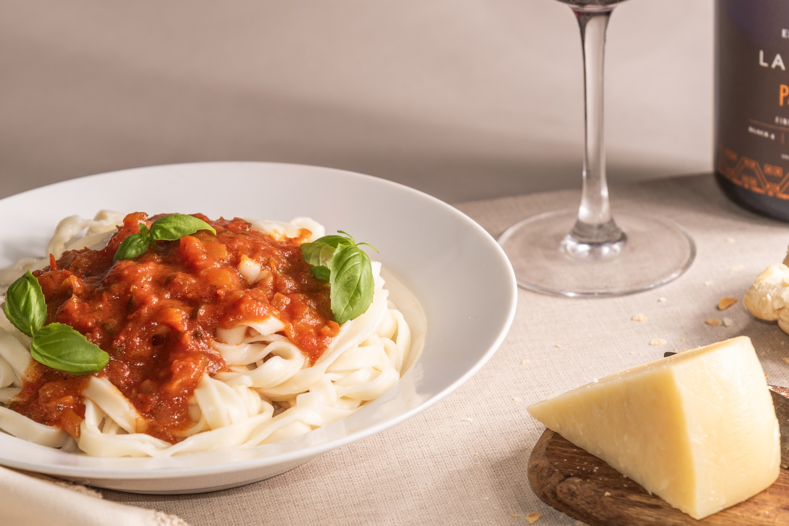

El verdadero Sabor Casero
Fábrica jujeña con más de 60 años de tradición en pastas frescas artesanales para familias, comercios y restaurantes del NOA.
Tradición jujeña en cada bocado.
Calidad artesanal
Harinas seleccionadas y elaboración diaria.
Variedad real
Tapas, fideos, ñoquis, ravioles y pascualinas.
Atención mayorista
Formato gastronómico y entregas programadas.